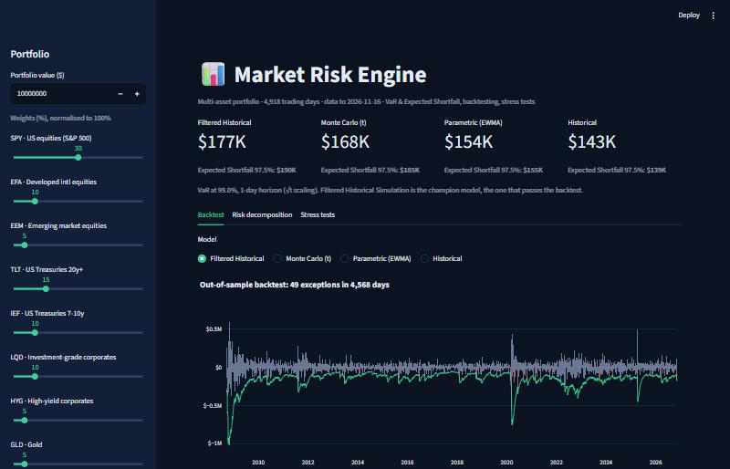
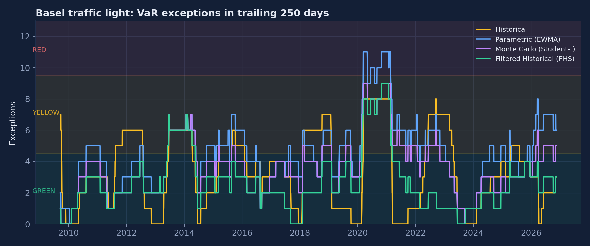
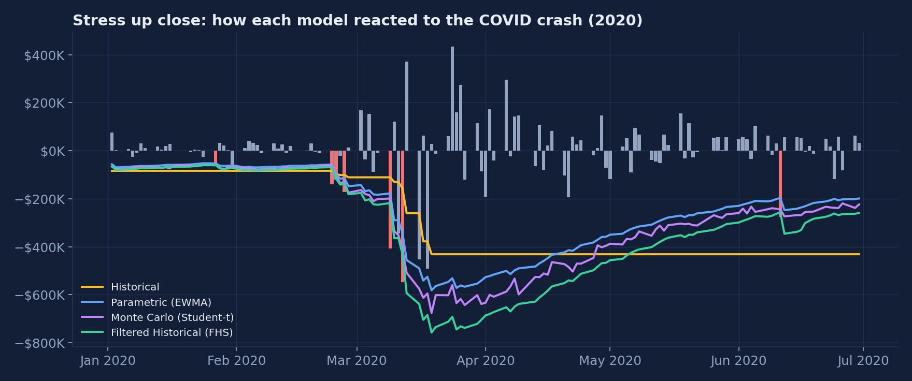
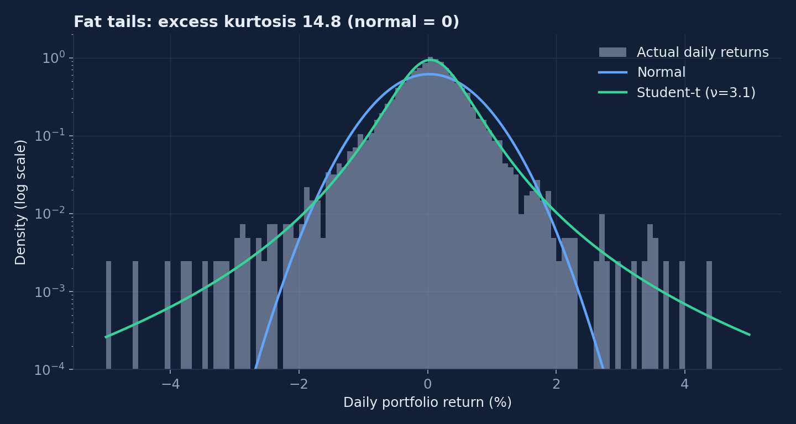
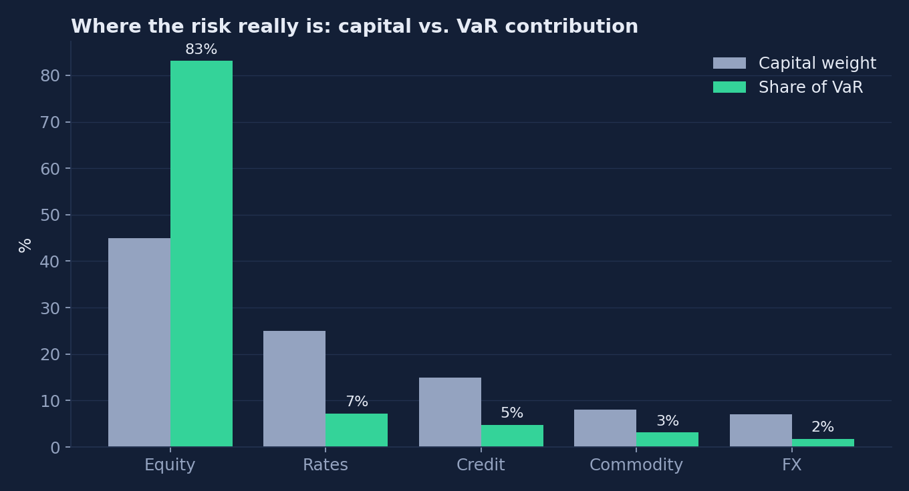
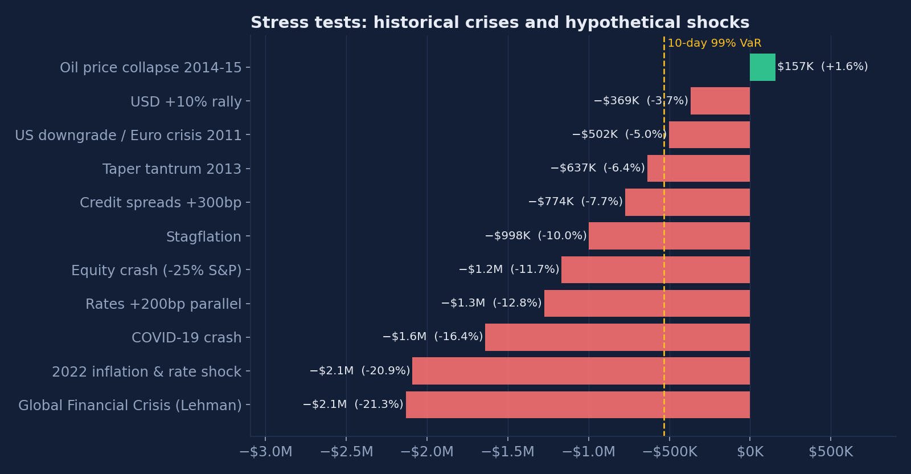
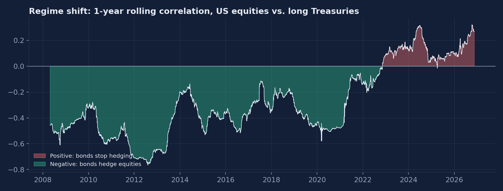

Case study · Risk & ML
Market Risk Engine
A Value-at-Risk and Expected Shortfall engine for a $10M multi-asset portfolio. It compares four models, backtests them on 18 years of daily forecasts using regulatory tests, and runs 11 stress scenarios, with an interactive dashboard. It rebuilds the toolkit I used as a Market Risk Officer.

The problem
Risk managers need one number that answers "how much could we lose tomorrow?", and they need to trust it. Many models look fine in calm markets and fail in a crisis. Regulators check this by backtesting: counting how often actual losses exceeded the VaR. A model with too many exceptions costs the bank extra capital.
Portfolio & data
A $10M portfolio of 10 ETFs covering every market risk class: equity (SPY, EFA, EEM), rates (TLT, IEF), credit (LQD, HYG), commodity (GLD, USO) and FX (EUR/USD). It uses 4,918 trading days of Yahoo Finance prices from May 2007 to November 2026.
Four models
- Historical simulation: the empirical loss quantile of the last 250 days.
- Parametric: RiskMetrics EWMA covariance with a normal distribution.
- Monte Carlo: 50,000 multivariate Student-t scenarios, to capture fat tails and assets crashing together.
- Filtered Historical Simulation: past returns rescaled to today's volatility. It keeps the real shape of crashes and still reacts quickly.
Plus Expected Shortfall (the 97.5% measure FRTB uses), Euler risk decomposition and 10-day Basel scaling.
Backtest results
Each model forecast VaR every day using only past data, then was compared with that day's actual P&L, across 4,568 days.
| Model | Exceptions | Kupiec p | Green zone |
|---|---|---|---|
| Filtered Historical | 49 | 0.63 ✓ | 88% |
| Monte Carlo (t) | 66 | 0.005 | 75% |
| Historical | 66 | 0.005 | 68% |
| Parametric (normal) | 82 | <0.001 | 52% |
Expected exceptions at 99%: 45.7. Only FHS passes the Kupiec test, and it never entered the red zone.


Why the textbook model fails
Portfolio returns have an excess kurtosis of 14.8, and a Student-t fit gives about 3 degrees of freedom. Crash days happen far more often than a normal distribution predicts, which is why the parametric model has nearly twice the expected exceptions.


Stress testing
Replaying the Lehman crisis would cost $2.13M (−21%) and the 2022 rate shock $2.09M. That's about 4× the 10-day 99% VaR, which is why VaR alone is never enough.

The hedge that broke
For 15 years, long Treasuries moved against equities and cushioned the portfolio in sell-offs. In late 2022 that correlation turned positive, and it is +0.27 today. A 60/40-style portfolio is now less diversified than its history suggests.

Recommendation
Use Filtered Historical Simulation as the production VaR model: it is the only one that passes the regulatory backtest, and it reacts to volatility changes. Keep Monte Carlo-t for what-if analysis, and report stress losses next to VaR to the risk committee.
Honest caveat: every model fails the Christoffersen independence test, because exceptions cluster in crises. Next step: GARCH filtering and stressed VaR.